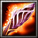

| Requisitos para uso de Itens e Equipamentos | ||||
|---|---|---|---|---|
| Inferior | Normal | Superior | Excepcional | Elite |
| Nível 1 | Nível 3 | Nível 5 | Nível 7 | Nível 9 |
| Equipamentos | |||||
|---|---|---|---|---|---|
| Qualidade | Inferior | Normal | Superior | Excepcional | Elite |
| Arma | +2 Ataque | +4 Ataque | +6 Ataque | +8 Ataque | +10 Ataque |
| Arma Arcana | +2 Ataque M. | +4 Ataque M. | +6 Ataque M. | +8 Ataque M. | +10 Ataque M. |
| Escudo | 2 Bloqueio | 4 Bloqueio | 6 Bloqueio | 8 Bloqueio | 10 Bloqueio |
| Armadura de Couro | +2 Mitigação | +4 Mitigação | +6 Mitigação | +8 Mitigação | +10 Mitigação |
| Cota de Malha | 10 Armadura | 15 Armadura | 20 Armadura | 25 Armadura | 30 Armadura |
| Armadura de Placas | 20 Armadura -1 Esquiva | 25 Armadura -2 Esquiva | 30 Armadura -3 Esquiva | 35 Armadura -4 Esquiva | 40 Armadura -5 Esquiva |
| • O jogador pode escolher qualquer tipo de arma comum no momento da compra; • Escudos requerem Perícia com Escudo para serem utilizados; • Armaduras pesadas requerem Força mínima de 1/2/3/4/5 para serem equipadas. | |||||
| Amuletos | ||
|---|---|---|
| Amuletos Mágicos | ||
| Galho Carvalhoso | Vida +6 |
| Talismã Místico | Mana +10 |
| Anel da Precisão | Precisão +2 | |
| Talismã da Evasão | Esquiva +1 |
| Manopla Reforçada | Ataque (Melee) +2 | |
| Anel do Poder | Ataque Mágico +2 | |
| Elmo de Batalha | Proteção +10 |
| Capuz Xamânico | Resistências +10 |
| Amuletos Raros | ||
| Cinturão do Campeão | Força +1 | |
| Botas de Quel'Thalas | Destreza +1 | |
| Manto dos Magi | Inteligência +1 | |
| Esfera Verdejante | Vitalidade +1 | |
| Amuletos Lendários | ||
| Tomo Místico | Habilidade Especial +1 |
| A Pedra Vermelha | 10% Acerto Crítico | |
| Medalhão da Coragem | Reduz em 1 todo dano recebido |
| Astrolábio | Reduz o custo da primeira Habilidade a cada combate em 5PMs |
| Berrante Satânico | 10% Roubo de Vida |
|  | Cajado do Vazio | 10% Vampirismo mágico |
| Malevolência | Ativo: Silencia um inimigo por 2 rodadas | |
| Coração e Alma | +10% Vida e Mana máximas |
| Totem Shamânico | 10% Acerto Crítico com magias | |
| Mente Sobre a Matéria | 30% do dano é deduzido da mana antes da vida |
| Monóculo | Precisão +5 | |
| Relíquia Sagrada | +25% em Curas e Escudos conjurados |
| Coração de Lich | +1d6 de Ataque contra mortos-vivos | |
| Orbe da Vigilância | Recebe Iniciativa | |
| Carrilhão de Ossos | Inicia o combate com um escudo mágico (25% Vida máxima) que absorve dano. O escudo dura 2 rodadas. |
| • Limite de Amuletos: cada personagem pode equipar até 1/2/3 amuletos nos níveis 1/5/9. | ||
| Consumíveis | |||||
|---|---|---|---|---|---|
Poções Mágicas | |||||
| Qualidade | Inferior | Normal | Superior | Excepcional | Elite |
| Cura | 10 PVs | 20 PVs | 30 PVs | 40 PVs | 50 PVs |
| Mana | 5 PMs | 10 PMs | 15 PMs | 20 PMs | 25 PMs |
| Explosiva | 10 Ataque | 20 Ataque | 30 Ataque | 40 Ataque | 50 Ataque |
| Rejuvenescimento | Recupera 50% da Vida e Mana máximos | ||||
| Corrosiva | Reduz a armadura do alvo em 50% até o fim do combate | ||||
| Venenosa | Envenena o alvo, causando 10% da Vida máxima como dano no final de seu turno | ||||
| Fumaça | Reduz em 50% a Precisão do oponente alvo | ||||
| Gosmenta | Reduz em 50% a chance de Esquiva e Bloqueio do oponente alvo | ||||
| Recuperação | Remove a maioria das condições negativas | ||||
| • Poções consomem uma ação para serem utilizadas. • O uso de poções não requer uso de mana. • Poções podem ser arremessadas, mas exigem um teste bem-sucedido de Precisão para acertarem o alvo. | |||||
 Pergaminhos Mágicos | |||||
| Nível | 1 | 2 | 3 | 4 | 5 |
| Ventos Revigorantes | 10 PVs | 20 PVs | 30 PVs | 40 PVs | 50 PVs |
| Cura um alvo e mais até 3 aliados próximos. O valor de cura é reduzido em 10% para cada alvo após o primeiro. | |||||
| Explosão Elemental | 6 Ataque | 12 Ataque | 18 Ataque | 24 Ataque | 30 Ataque |
| Causa dano elemental a todos os inimigos próximos. O elemento depende do pergaminho. | |||||
| Barricada | 12 PVs | 24 PVs | 36 PVs | 48 PVs | 60 PVs |
| Cria um escudo mágico que protege os personagens, reduzindo o valor dos ataques recebidos. O escudo pode absorver uma determinada quantidade de PVs. | |||||
| Armadura Fantasmagórica | 10 Resistência | 20 Resistência | 30 Resistência | 40 Resistência | 50 Resistência |
| Aumenta as Resistências de todo o grupo. | |||||
| Forma Demoníaca | Ataque +1d6 | Ataque +2d6 | Ataque +3d6 | Ataque +4d6 | Ataque +5d6 |
| Aumenta o ataque físico de todo o grupo. | |||||
| Fogo Inebriante | Ataque M. +1d6 | Ataque M. +2d6 | Ataque M. +3d6 | Ataque M. +4d6 | Ataque M. +5d6 |
| Aumenta o ataque mágico de todo o grupo. | |||||
| Onda Debilitante | Ataque -2 | Ataque -4 | Ataque -6 | Ataque -8 | Ataque -10 |
| Reduz a potência dos ataques físicos de todos os inimigos. | |||||
| Tenacidade | Cura aumentada em 50% até o fim do combate | ||||
| • Pergaminhos consomem 5 PMs do usuário ao conjurar seus encantamentos. • Após o uso, os pergaminhos desaparecem, desfazendo-se em cinzas. • Pergaminhos têm requisito mínimo de 1 Inteligência para cada nível do pergaminho. | |||||